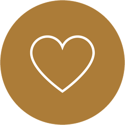
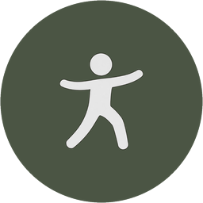

Kopf
Was möchtest du noch lernen, entdecken, gestalten oder verändern? Was ist dir wirklich wichtig – beruflich, persönlich, geistig?
Persönliche Standortbestimmung · 90 Minuten
Und was braucht es heute dafür?
In einer persönlichen Standortbestimmung schauen wir gemeinsam darauf, wo du stehst, wo du hinmöchtest – und was dein nächster sinnvoller Schritt sein könnte.
Drei Blickrichtungen
Dein Leben lässt sich nicht in Schubladen aufteilen. Manchmal hilft es trotzdem, aus drei Richtungen darauf zu schauen.
Was möchtest du noch lernen, entdecken, gestalten oder verändern? Was ist dir wirklich wichtig – beruflich, persönlich, geistig?

Mit wem und wie möchtest du leben? Welche Menschen, Beziehungen und Erfahrungen sollen Raum in deinem Leben haben?

Was möchtest du mit 70 oder 80 noch können? Und was braucht dein Körper heute, damit er dich morgen noch dorthin bringt?
Standort · Ziel · Weg
Sie beginnt mit zwei ehrlichen Fragen. Erst danach lohnt sich die Frage nach dem Weg.
Nicht wo du sein solltest. Nicht wo andere dich sehen. Sondern wo du selbst gerade wirklich stehst.
Nicht nur nächste Woche. Sondern auch mit Blick auf die nächsten zehn, zwanzig oder dreißig Jahre.
Keine Lebensplanung bis ins Detail. Sondern ein nächster Schritt, der zu deinem Zielbild passt.
Du brauchst keinen Plan bis 80. Du brauchst eine Richtung. Eine Roadmap darf sich verändern – wichtig ist, dass dein nächster Schritt zu ihr passt.
Die Lebenslandkarte
Manchmal hilft es, erst einmal Möglichkeiten zu entdecken. Auf der Lebenslandkarte sind Gesundheit, Freiheit, Sicherheit, Neugier, Partnerschaft und viele andere Lebensbereiche als Orte eingezeichnet – mit Wegen, Brücken und Umwegen dazwischen.
Die Karte gibt keine Antworten. Sie macht sichtbar, worüber es sich vielleicht zu sprechen lohnt.
Es gibt diese Karte in Lebensgröße. Als 2 × 1,5 Meter große Bodenkarte, auf die man sich tatsächlich stellen kann. Wenn du magst, machen wir das in deiner Standortbestimmung – manchmal ist es leichter, sich zu verorten, wenn man wirklich irgendwo steht.
Zu Messen und Veranstaltungen nehme ich sie mit. Und wer eine Standortbestimmung bucht, bekommt die Karte auf Wunsch als hochauflösende PDF-Datei.

Ein Ausschnitt – die vollständige Karte zeigt über vierzig Orte. Zum Herunterladen anklicken.
Das Gespräch
Manchmal wissen wir ziemlich genau, was wir nicht mehr wollen. Schwieriger wird es bei der Frage, was uns wirklich wichtig ist – und was wir heute dafür tun können.
Keine fertigen Antworten. Aber vielleicht die richtigen Fragen.
Für wen
Über mich
Ich stelle dir die Fragen, für die im Alltag selten Zeit ist. Und ich sage dir ehrlich, was ich sehe – auch dann, wenn es unbequem ist.
Das ist kein standardisiertes Programm und kein fertiger Lebensplan, sondern meine persönliche Einschätzung auf Basis unseres Gesprächs und meiner Erfahrung. Was du daraus machst, entscheidest du.
Mike Trepte
Dein Partner für Klarheit und Orientierung
Die persönliche Standortbestimmung
Termine kannst du bis 48 Stunden vorher kostenfrei verschieben.
Du triffst mich auf der Herbstmesse Kassel? Rund um die Messe gibt es die Standortbestimmung zu einem deutlich günstigeren Messepreis.
Zum Messeangebot →Häufige Fragen
Der nächste Schritt
Du musst heute nicht den ganzen Weg kennen. Aber es kann sinnvoll sein, einmal bewusst hinzuschauen, wo du stehst und was dir wirklich wichtig ist.
Klarheit·Richtung·Nächster Schritt